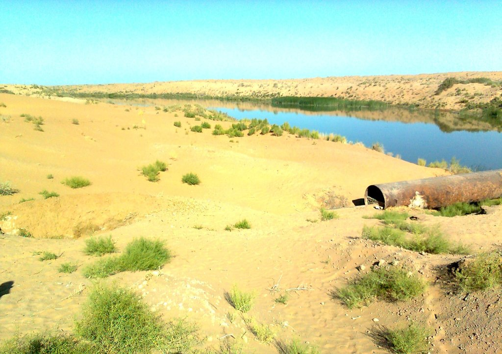

Изменившийся Арал: высохшее море, саксауловый лес и Аральская школа в Нукусе
Аральское море потеряло около 90% своего размера, и на его месте образовалась новая пустыня Аралкум. Теперь на высохшем дне сажают лес, а ACDF открыл резиденцию «Аральская школа» в Нукусе.

Аральское море когда-то было четвёртым по величине озером в мире — площадью около 68 000 км² и глубиной примерно 40 м (UNCCD). Сегодня на его месте лежит новая пустыня Аралкум; на высохшем дне сажают лес, а в Нукусе работает международная резиденция под названием «Аральская школа».
Что произошло?
Ирригация советской эпохи отвела Амударью и Сырдарью (в основном для хлопка), и с 1960-х годов озеро потеряло около 90% своего размера (UNCCD). На высохшем дне образовалась новая пустыня Аралкум (около 60 000 км²); высохшее ложе озера в Узбекистане составляет около 6,8 млн гектаров (Mongabay/научные источники).
Люди и здоровье
Песчано-пылевые бури ежегодно поднимают с Аралкума оценочно 15–75 млн тонн песка, пыли и соли (Всемирный банк, по данным Kun.uz). Эти бури влияют на здоровье и жизнь общин в Каракалпакстане.
Потерянное море — в цифрах
- Первоначальная площадь: ~68 000 км² (UNCCD)
- Потеря размера: ~90% (UNCCD)
- Пустыня Аралкум: ~60 000 км²
- Высохшее дно (Узбекистан): ~6,8 млн га (Mongabay)
Озеленение
За пять лет было посажено около 1,7 млн гектаров саксаула, а на 2024 год запланировано 150 000–200 000 га (Mongabay). UNCCD сообщает о восстановлении около 1,5 млн из примерно 3 млн деградировавших гектаров.
Зрелый куст саксаула (7–10 лет) удерживает около 2–4 тонн подвижного песка; его корни достигают ~10–15 м; каждый гектар поглощает около 1,1 тонны CO₂ и выделяет ~0,8 тонны кислорода в год (UNDP/Mongabay). Выживаемость саженцев около 30% при малом количестве осадков и до 50–70% при достаточных дождях.
27 февраля 2026 года UNDP и узбекский Фонд развития искусства и культуры (ACDF) запустили кампанию по лесовосстановлению: 90 000 саженцев саксаула/галофитов на 90 гектарах близ Муйнака (Моынак). Первоначальная краудфандинговая кампания «Green Aral Sea» была запущена 11 марта 2020 года (UNDP/Kun.uz).
Аральская школа
Аральская школа — международная шестимесячная постдипломная резиденция ACDF, базирующаяся в Нукусе, Каракалпакстан, посвящённая социальному, экологическому и культурному возрождению региона. Её возглавляет Гаяне Умерова; директор программы — Джозеф Грима. Первый набор представил 12 объектов в Милане в апреле 2026 года.
Второй набор, «Climate and Landscape», работает с января по июнь 2027 года; приём заявок открыт с 14 сентября по 25 октября 2026 года.
The Aral School was never conceived as a single cohort or a single event. It's a long-term commitment.
— Гаяне Умерова, председатель ACDF (The Times of Central Asia)
Восстановление
Казахстанская Кокаральская плотина (завершена в 2005 году) подняла уровень Северного (Малого) Арала и возродила рыбные запасы; южный (Большой) Арал в Узбекистане остаётся в основном высохшим.
В цифрах
- Кокаральская плотина: 2005 (Северный Арал возрождён)
- Второй набор: январь–июнь 2027
- Выставка в Милане: 12 объектов (апрель 2026)
- Закрытие приёма заявок: 25 октября 2026